Unofficial study solution; not an official GTU answer key. Answers have not been independently verified. English text reflows; source equations, diagrams and Gujarati retain their original appearance. Use Enlarge image to inspect them.
આ બિનસત્તાવાર અભ્યાસ ઉકેલ છે, સત્તાવાર GTU જવાબવહી નથી. PDF માંથી ગુજરાતી લખાણ સાચું નીકળતું નથી, તેથી દરેક જવાબ મૂળ ચિત્રરૂપે જાળવ્યો છે. વાંચવા માટે ચિત્ર મોટું કરો. મૂળ પ્રશ્ન અને પરીક્ષાના વિકલ્પોની સૂચનાઓ અનુસરો.
Coverage: all five questions and every printed OR alternative are answered: 28 parts. The authentic English question is retained in both language views; answers are in English and Gujarati. Diagrams are schematic and not to scale.
Printed instructions: attempt all questions; make suitable assumptions; figures on the right indicate full marks; simple and non-programmable scientific calculators are permitted; the English version is authentic.
Assumptions: Q1(b) treats pA and pB as pure-component saturation pressures for an ideal solution. Q1 OR(c) does not specify crystal hydrate or the yield basis; both anhydrous and explicitly assumed heptahydrate cases are shown. Q4 OR(c) treats the supplied water heat capacity as water-vapour heat capacity. Other illustrations are marked as such.
Code: this is the supplied 4350501 paper, not a new-scheme DI05005011 paper. These are study materials, not an official GTU answer key.
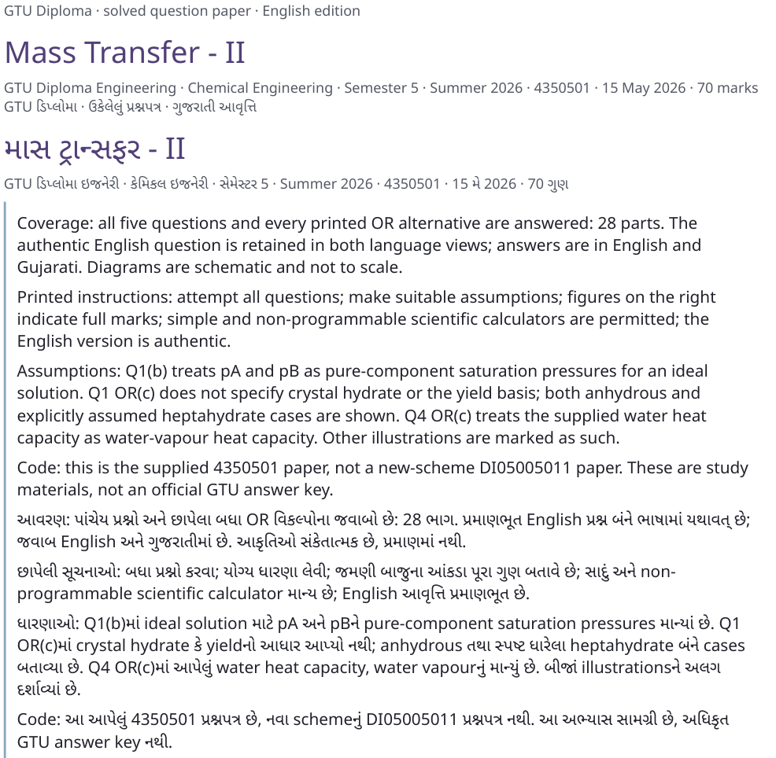
Question 1
Q1 · Absorption, volatility and crystallization
Q.1 (a) · Define Gas absorption. Write its industrial applications. · 3 marks
Gas absorption transfers a soluble component from a gas mixture into a contacting liquid.
• The liquid is the absorbent; the remaining gas is leaner in the transferred solute.
• Absorption may be physical dissolution or may include a chemical reaction.
• Industrial uses include removal of NH₃ from air with water, CO₂ with an amine solution, and SO₂ from flue gas with alkaline liquor.
For example, water scrubbing recovers ammonia from an ammonia–air mixture; the rich liquid needs further handling.
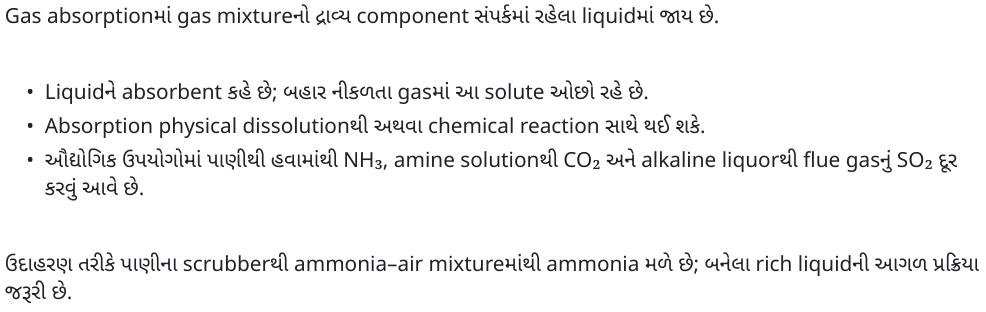
Q.1 (b) · Prove relative volatility α = pA/pB. · 4 marks
Relative volatility compares the equilibrium tendencies of A and B to enter the vapour. Here the printed pA and pB must mean pure-component saturation vapour pressures at the same temperature.
Assumptions and derivation
Ideal liquid obeys Raoult’s law; vapour obeys Dalton’s law; both phases are at equilibrium.
x and y are liquid and vapour mole fractions; P is total pressure.
2. Raoult and Dalton — yAP = xApA°; yBP = xBpB°.
4. Divide — The common total pressure P cancels.
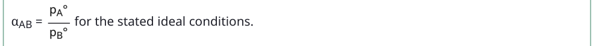
Example: 80 kPa and 40 kPa pure vapour pressures give α = 2. If pA and pB instead mean mixture partial pressures, their ratio also contains xA and xB and is not generally α.
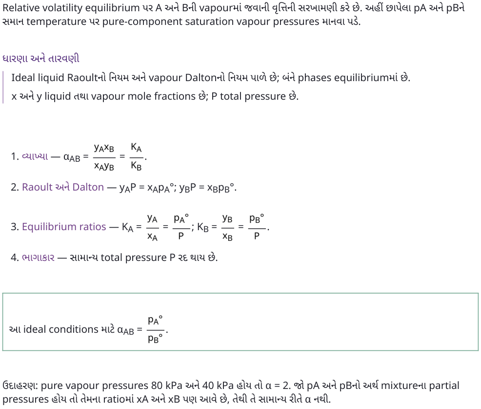
Q.1 (c) · Explain Swenson-Walker crystallizer with neat sketch. · 7 marks
The Swenson–Walker crystallizer is a continuous cooling crystallizer. Cooling a suitable concentrated solution produces supersaturation, nucleation and growth.
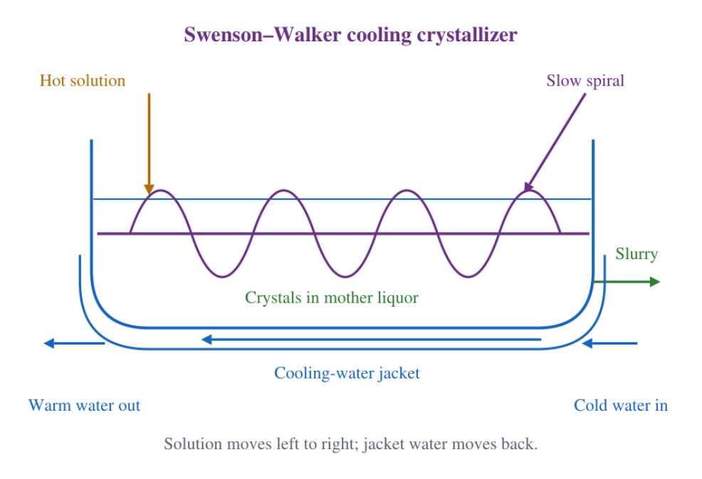
A longitudinal schematic: coolant is in the external jacket and does not mix with the solution.
Construction — part and purpose
1. A long open trough with a semicylindrical bottom receives hot concentrated solution at one end and discharges slurry at the other.
2. An external water jacket removes heat; cooling water commonly flows opposite to the solution.
3. A slow, long-pitch spiral agitator runs close to the cooled bottom to mix and lift crystals and reduce deposits.
4. A discharge and downstream drain, filter or centrifuge separate crystals from mother liquor.
Working — step and reason
1. Feed the hot solution continuously and pass cooler water through the jacket; heat crosses the wall without mixing the fluids.
2. As the solution cools, its equilibrium solubility falls for a suitable solute, producing supersaturation; nuclei form or added seeds grow.
3. The rotating spiral keeps crystals suspended, moves slurry along the trough and limits crystal accumulation on the cold wall.
4. Withdraw crystals with mother liquor, separate the solid and handle or recycle the liquor as appropriate.
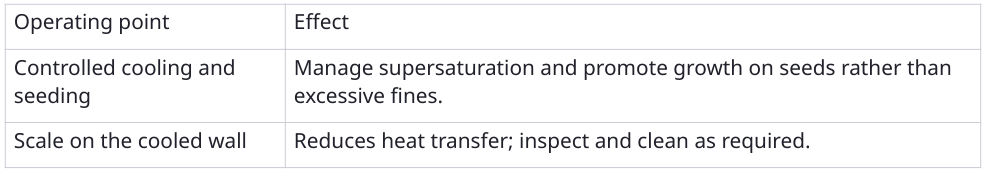
Example: cooling a concentrated salt solution whose solubility decreases with temperature produces crystals. Cooling rate, seeding and residence time affect crystal size; scaling and fouling reduce heat transfer. Not every solute has the required temperature–solubility behaviour.
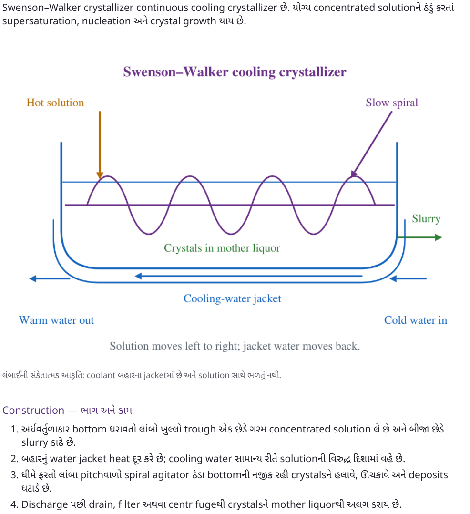
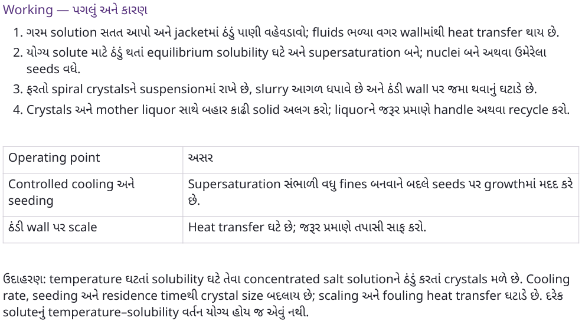
Q.1 (c) · 100 kg solution of MgSO4 in water containing 48% MgSO4 by weight at 80 0C. Calculate the %yield of MgSO4 crystals that may be obtained when temperature is reduced to 30 0C. Solubility of MgSO4 at 30 0C is 40.8 kg per 100 kg water. · OR · 7 marks
The paper gives MgSO₄ solubility but does not specify the crystal hydrate or the denominator for “%yield”. The following two clearly stated cases are not interchangeable.
Given and common assumptions
Feed = 100 kg solution at 80 °C: MgSO₄ = 48 kg; water = 52 kg.
At 30 °C the saturated mother liquor contains 0.408 kg MgSO₄ per kg water.
Assume equilibrium at 30 °C, no evaporation or losses, and perfectly separated crystals.
Case 1 — anhydrous MgSO₄ crystals, as written
1. Mother liquor — All 52 kg water stays in the liquor; dissolved MgSO₄ = 0.408 × 52 = 21.216 kg.
2. Crystals — C = 48 − 21.216 = 26.784 kg anhydrous MgSO₄.
Anhydrous assumption: 26.784 kg crystals; 55.80% of feed MgSO₄, or 26.784% of solution mass.
Check: mother liquor is 52 + 21.216 = 73.216 kg; crystals plus liquor = 100 kg.
Case 2 — if MgSO₄·7H₂O crystals are intended
A common hydrate near 30 °C is MgSO₄·7H₂O, but the paper does not say this; assume the stated solubility applies to that solid phase.
Using molar masses 120.366 and 246.470 kg kmol⁻¹, the crystal mass fraction of MgSO₄ is
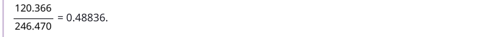
1. Let C be hydrate mass — MgSO₄ left in liquor = 48 − 0.48836C kg; water left = 52 − 0.51164C kg.
2. Saturation balance — 48 − 0.48836C = 0.408(52 − 0.51164C).
Heptahydrate assumption: about 95.79 kg crystals, or 95.79% of solution mass; about 97.46% of MgSO₄ recovered.
Check: about 4.21 kg saturated mother liquor remains. Crystal form and yield basis must be specified for a unique answer.
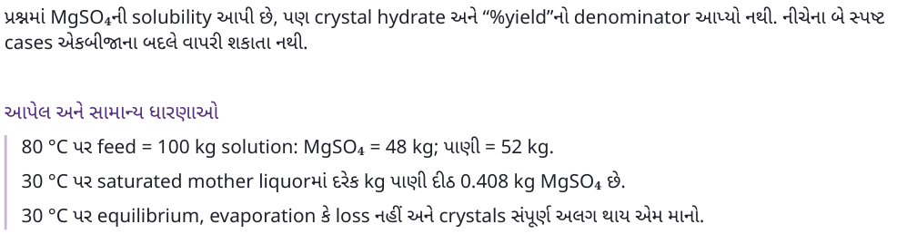
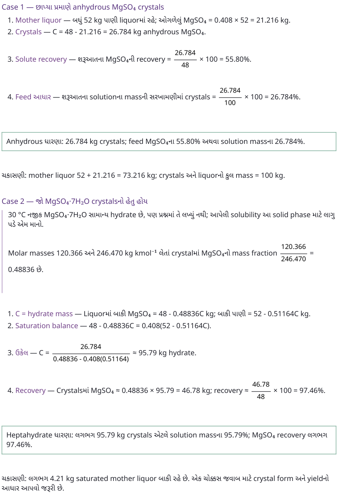
Question 2
Q2 · Gas–liquid equipment and adsorption
Q.2 (a) · Write the importance of Gas Liquid operation. Also classify equipment for gas- liquid operation. · 3 marks
Importance: gas–liquid contact provides area and time for mass transfer, such as pollutant removal, vapour–liquid separation and cooling.
• Gas dispersed: tray tower, bubble column and mechanically agitated vessel.
• Liquid dispersed or spread: spray tower and wetted packed tower.
• High-velocity contact: venturi scrubber disperses droplets in a moving gas.
Example: a packed absorber removes ammonia from gas using water.
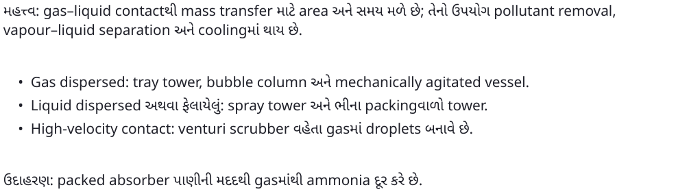
Q.2 (b) · Differentiate: Physical adsorption and Chemisorption. · 4 marks
Adsorption concentrates a species at a surface. Its bonding mechanism can be predominantly physical or chemical.
![Q.2 (b): preserved source formula, table or diagram, page 10. Extracted text context (formula notation may be incomplete): Property Physical adsorption Chemisorption Forces Relatively weak intermolecular forces. Specific chemical bonding to surface sites. Heat and activation Usually lower heat; often little activation barrier. Usually higher heat; may require activation. Layers and reversibility May form multiple layers and is often readily reversible. Usually limited to a surface layer and may be difficult to reverse. Example Water vapour on silica gel. Hydrogen on a suitable metal catalyst.](summer-2026.assets/0018.webp)
These are common tendencies, not universal cutoffs: both mechanisms and reversibility depend on the material and conditions.
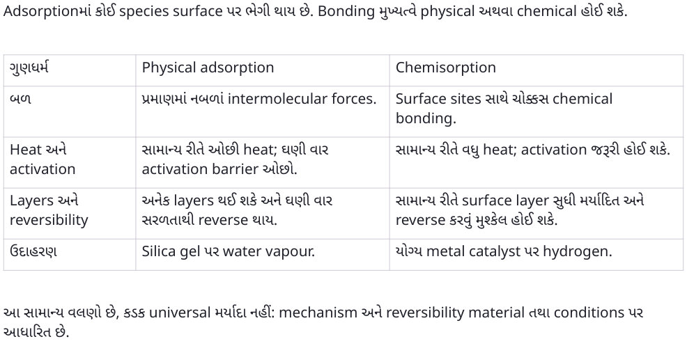
Q.2 (c) · Explain Freundlich equation for single stage adsorption. · 7 marks
Freundlich’s isotherm is an empirical equilibrium relation between solute concentration in a fluid and loading on an adsorbent at a specified temperature.
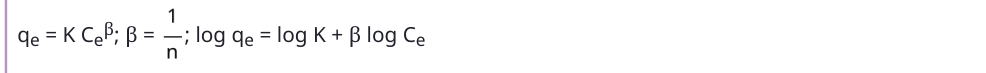
qe is mass of adsorbate per mass of dry solid; Ce is equilibrium fluid concentration. K depends on the units and temperature; β is the fitted exponent, often between 0 and 1.
Single-stage material balance
Contact V of dilute solution, initially C0, with M of fresh adsorbent; assume constant liquid volume and negligible initial loading.
1. Solute balance — V C0 = V Ce + M qe.
3. Equilibrium — Set the balance equal to K Ceβ and solve for Ce.
4. Graphical solution — The descending balance line intersects the isotherm at the equilibrium pair Ce, qe.
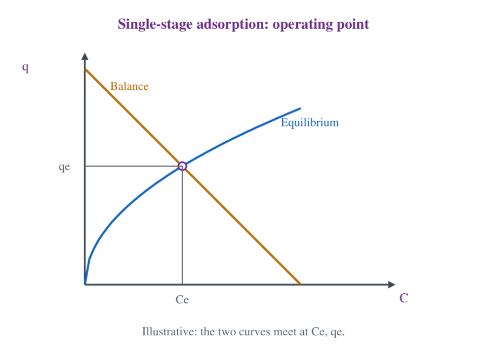
Illustrative equilibrium isotherm and single-stage balance line.
Worked example
V = 1 L; M = 1 g; C0 = 6 mg L⁻¹; β = 0.5.
For these units and this temperature, qe = 2√Ce, with q in mg g⁻¹ and C in mg L⁻¹.
1. Balance — qe = 6 − Ce on the stated numerical units.
2. Solve — 6 − Ce = 2√Ce; put t = √Ce, so t² + 2t − 6 = 0.
3. Positive root — t = √7 − 1; Ce ≈ 2.708 mg L⁻¹ and qe ≈ 3.292 mg g⁻¹.
Ce ≈ 2.708 mg L⁻¹; qe ≈ 3.292 mg g⁻¹ for this example.
Check: 2.708 mg remains in the litre and 3.292 mg is adsorbed, totalling 6 mg. The empirical isotherm must be fitted to data and may fail outside its measured range.
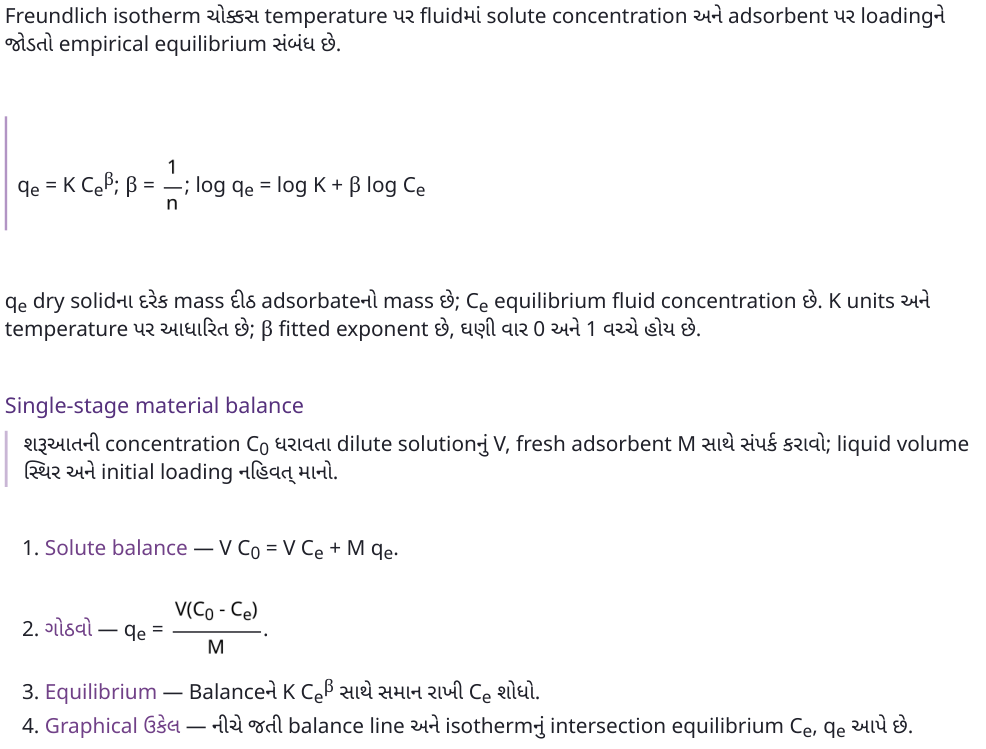
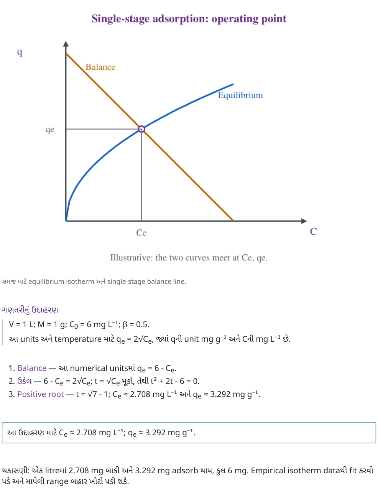
Q.2 (a) · Write the importance of packing and classify them. · OR · 3 marks
Packing provides a large wetted surface where gas and liquid can contact in a packed tower.
• It should provide good wetting and void space with acceptable pressure drop.
• Random packing: loose Raschig rings, Pall rings and saddles.
• Structured packing: ordered corrugated sheets or mesh elements.
Example: Pall rings provide contact area in an absorption column; poor liquid distribution reduces their effectiveness.
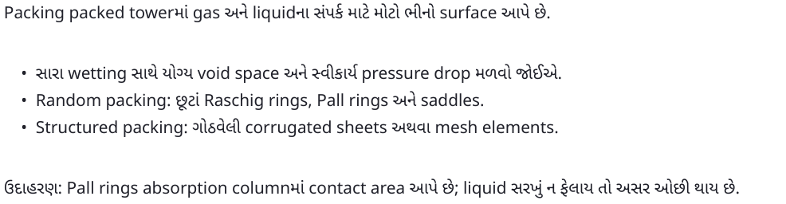
Q.2 (b) · Define: Adsorption, Ion-exchange, Adsorbate, Adsorbent · OR · 4 marks
Four related surface-separation terms:
1. Adsorption: accumulation of a component at a surface, rather than simply throughout the bulk.
2. Ion exchange: reversible interchange of ions in a solution with equivalently charged mobile ions attached to an insoluble exchanger.
3. Adsorbate: the substance that is taken up at the surface.
4. Adsorbent: the solid providing the surface and pores for adsorption.
Example: activated carbon is the adsorbent and a colour compound it retains is the adsorbate. Ion exchange specifically exchanges ions and is not the same as general adsorption.
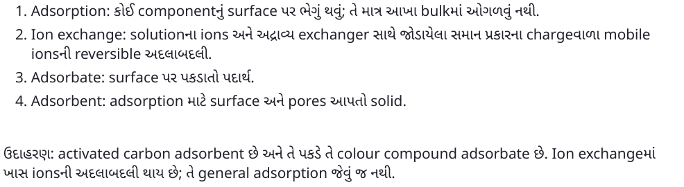
Q.2 (c) · Explain Pressure Swing Adsorber with neat sketch. · OR · 7 marks
Pressure swing adsorption (PSA) separates gases by preferential adsorption at higher pressure and regeneration at lower pressure. At least two beds can alternate to supply product nearly continuously.
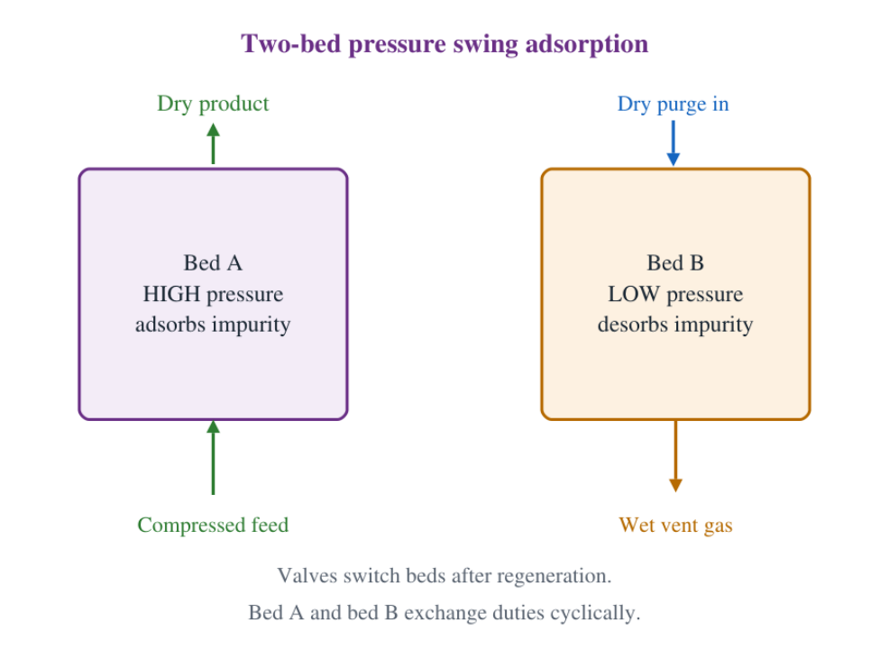
One step of a two-bed cycle; the valves later reverse the duties.
Construction — part and purpose
1. Two pressure-rated vessels contain a suitable porous adsorbent; distributors and supports retain the beds.
2. A compressor and feed valves admit gas to the bed on adsorption duty.
3. Product, blowdown and purge valves plus a controller allow the other bed to regenerate and then swap duty.
Working — step and reason
1. Compress feed and send it through bed A at high pressure. The selected impurity is preferentially retained and a less-adsorbed product leaves.
2. Isolate and depressurize bed B. The lower partial pressure promotes desorption; a small clean purge may remove remaining impurity to the vent.
3. Repressurize the regenerated bed and switch the valves: B adsorbs while A regenerates. Equalization and purge details depend on the cycle.
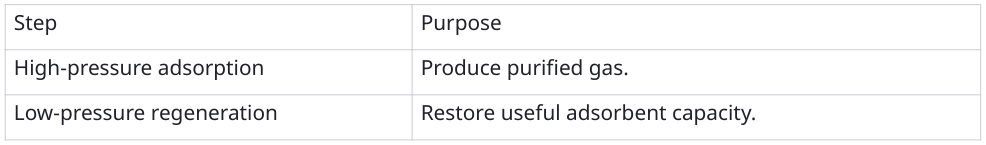
Example: an appropriate silica-gel or alumina system dries compressed air. Bed choice, cycle time, product loss and safe disposal of concentrated vent gas must be checked; pressure change does not remove all strongly irreversible contaminants.
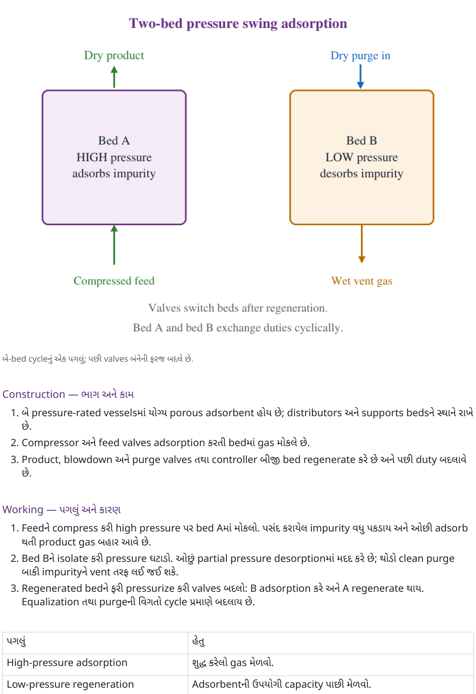
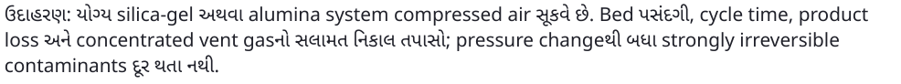
Question 3
Q3 · Absorption towers and ideal solutions
Q.3 (a) · Write selection criteria of solvent for gas absorption. · 3 marks
Choose an absorbent for the actual gas, pressure, temperature and required outlet purity.
• Capacity and selectivity: high solubility or useful reaction for the target, with low absorption of valuable carrier gas.
• Recovery: solvent should be reasonably easy to regenerate, with low volatility and make-up loss.
• Hydraulics and compatibility: suitable viscosity and wetting, low foaming and manageable corrosion.
• Safety and cost: consider toxicity, flammability, disposal, regeneration energy and total cost.
Example: water can absorb NH₃ because it is highly soluble; the rich stream still needs safe handling. No single solvent is best for every gas.

Q.3 (b) · Explain Flooding and Channelling in packed column · 4 marks
Two common packed-column operating problems reduce effective gas–liquid contact:

Example: liquid fed at one wall may bypass much of the packing. Measure pressure drop and inspect the distributor before choosing a remedy.
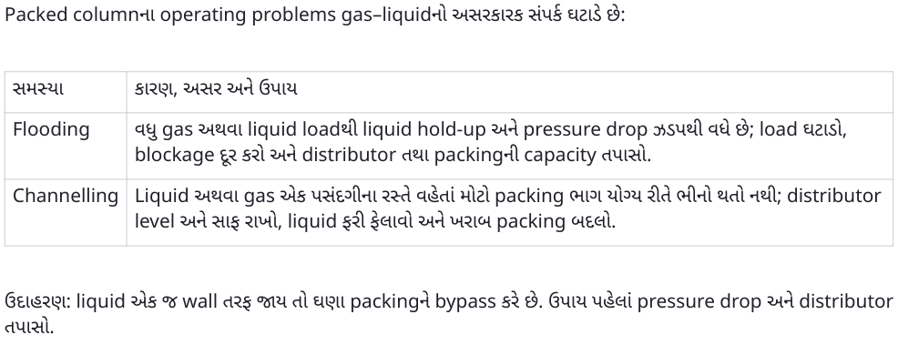
Q.3 (c) · Explain material balance of absorption tower for one component transfer in counter current flow. · 7 marks
For a steady countercurrent absorber, A transfers from gas into liquid. A solute balance gives the operating line, not the equilibrium line.
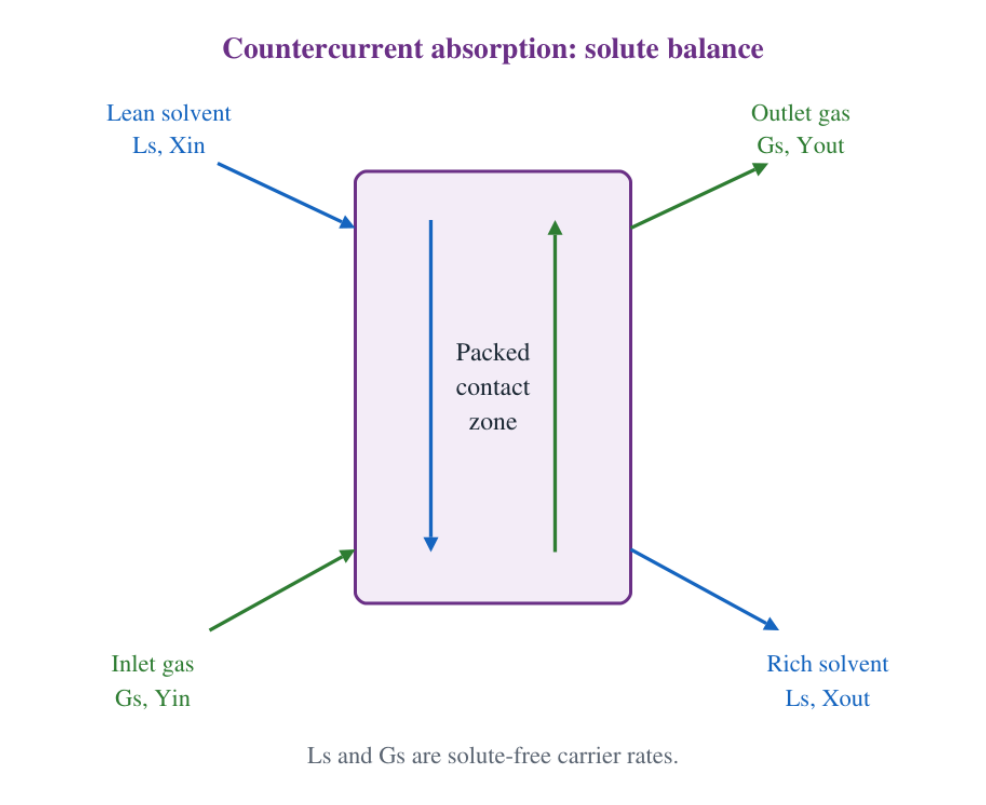
Schematic with solvent-free carrier rates and solute ratios.
Given and assumptions
Gs = inert gas molar flow; Ls = nonvolatile solvent molar flow.
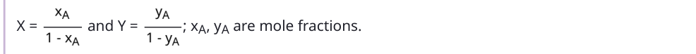
Steady state; carrier and solvent are not transferred, so Gs and Ls are constant.
Step-by-step material balance
1. Across the whole tower — GsYin + LsXin = GsYout + LsXout.
2. Rearrange — Gs(Yin − Yout) = Ls(Xout − Xin).
3. Above an intermediate section — GsY + LsXin = GsYout + LsX.
Illustrative check
Gs = 100 kmol h⁻¹; Ls = 200 kmol h⁻¹.
Yin = 0.10; Yout = 0.02; Xin = 0.
1. Transfer — 100(0.10 − 0.02) = 8 kmol h⁻¹ of A.
A transferred = 8 kmol h⁻¹; Xout = 0.04.
Check: both phases account for 8 kmol h⁻¹ of A. A feasible design also needs equilibrium and a positive driving force throughout.
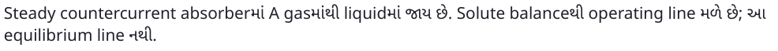
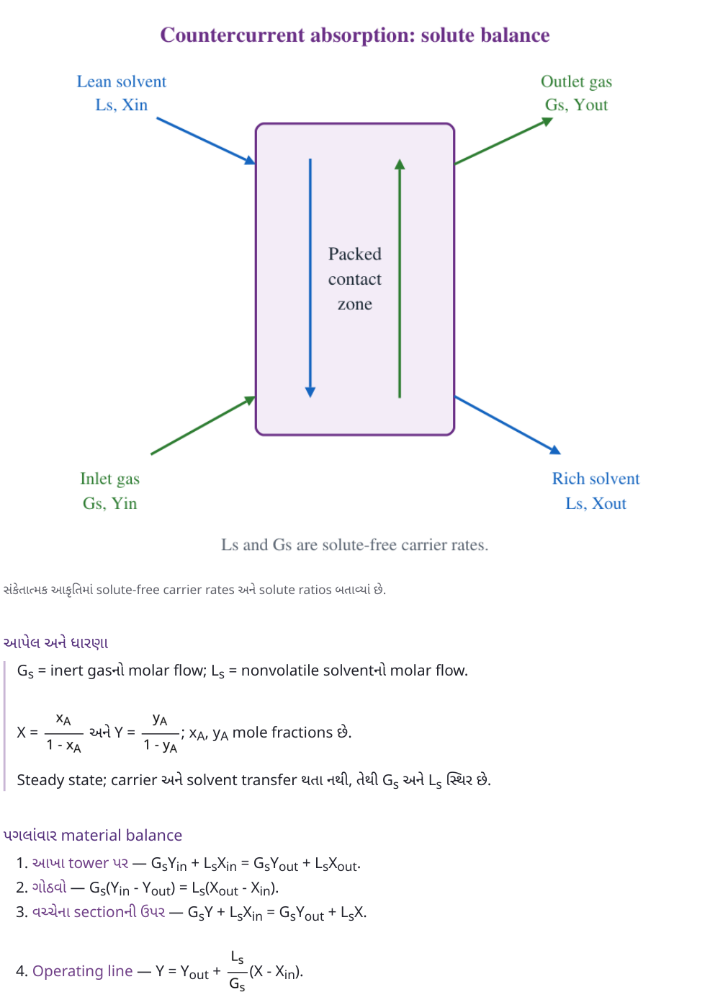
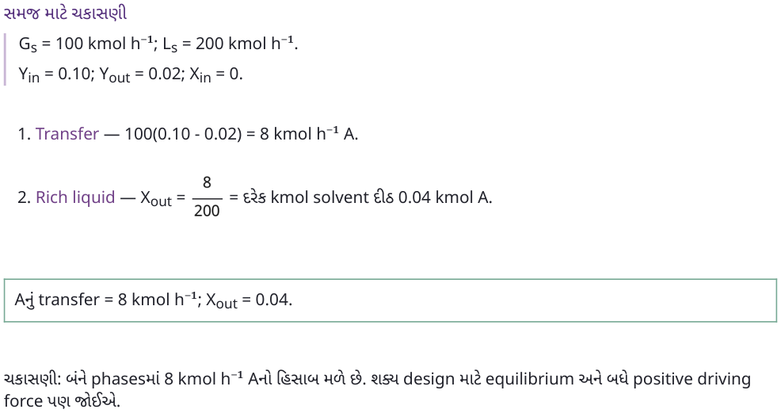
Q.3 (a) · Define HETP. Also write its significance. · OR · 3 marks
HETP, height equivalent to a theoretical plate, is the effective packed height that gives the separation of one equilibrium stage for a specified system and operating condition.
• Z is the effective packed height and N is its equivalent number of theoretical stages.
• A smaller HETP means more stage-equivalent separation per unit height under the same conditions.
• HETP depends on packing, fluids and loading; it is not a physical tray spacing.
Example: Z = 6 m and HETP = 0.6 m give N = 10 theoretical stages in the packing; a reboiler or condenser outside the packing is counted separately.
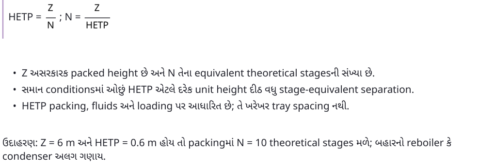
Q.3 (b) · Explain operating problems of tray tower. · OR · 4 marks
Tray-tower problems occur when vapour and liquid rates lie outside the useful operating range.
• Flooding or downcomer backup: too much vapour or liquid prevents drainage and raises pressure drop.
• Entrainment and foaming: droplets or persistent foam carry liquid upward, reducing separation.
• Weeping or dumping: too little vapour permits liquid to leak through tray holes instead of crossing the tray.
Example: restore a suitable vapour rate to correct weeping, while staying below the flooding limit. Fouling and poor tray level also need inspection.
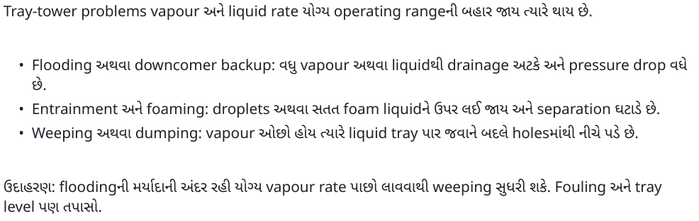
Q.3 (c) · Explain Raoult’s law. Also write the characteristics of ideal solution. · OR · 7 marks
Raoult’s law: for each volatile component of an ideal liquid solution at a given temperature, its equilibrium partial pressure equals its liquid mole fraction times the pure-component saturation vapour pressure.
pA = xApA°; pB = xBpB°; P = pA + pB
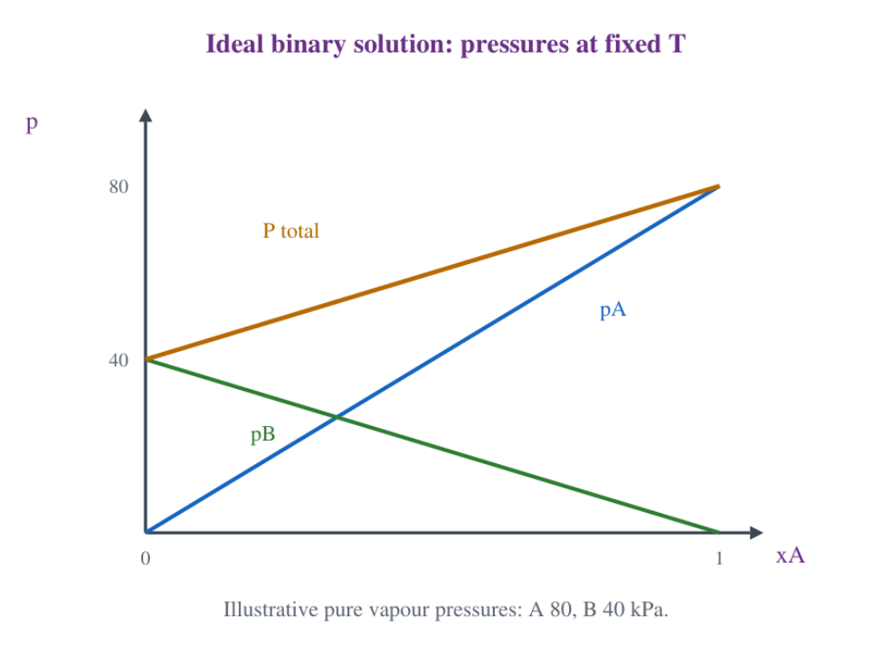
Illustrative straight-line partial and total pressures at a fixed temperature; numbers are not exam data.
Characteristics of an ideal solution
• Both components obey Raoult’s law over the entire liquid composition range at the stated temperature.
• Unlike and like molecular interactions are similar; the ideal enthalpy and volume changes of mixing are zero.
• Activity coefficients are unity on the Raoult standard-state basis; its total pressure is the sum of component partial pressures.
Illustrative example
pA° = 80 kPa; pB° = 40 kPa; xA = 0.4; xB = 0.6.
1. Partial pressures — pA = 0.4 × 80 = 32 kPa; pB = 0.6 × 40 = 24 kPa.
2. Total — P = 32 + 24 = 56 kPa.
P = 56 kPa; yA ≈ 0.571 for this example.
Benzene–toluene is often approximately ideal. Strongly nonideal mixtures need measured equilibrium or an activity-coefficient model.
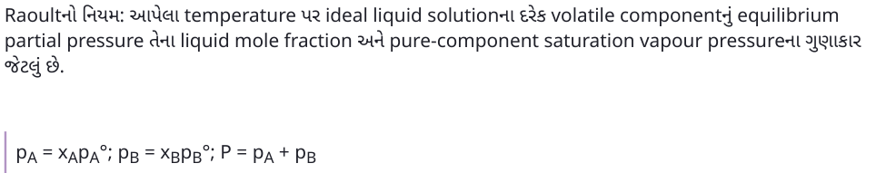
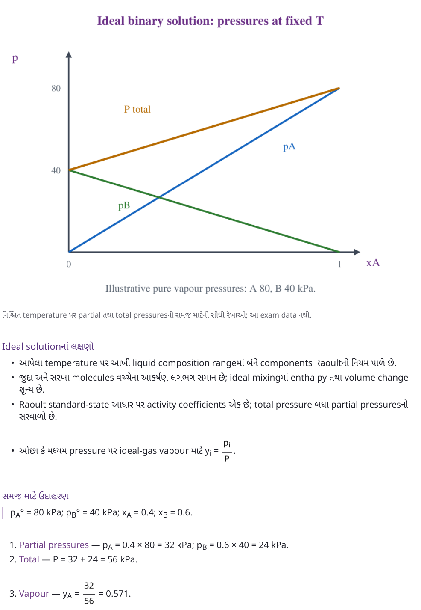
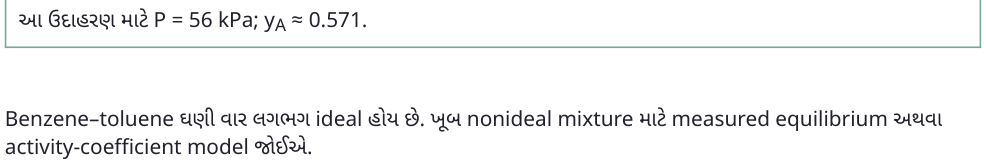
Question 4
Q4 · Vapour pressure, crystals and humidification
Q.4 (a) · Explain vapor pressure curve. · 3 marks
Saturation vapour pressure is the pressure of vapour in equilibrium with its pure liquid at a stated temperature. A vapour-pressure curve plots this pressure against temperature.
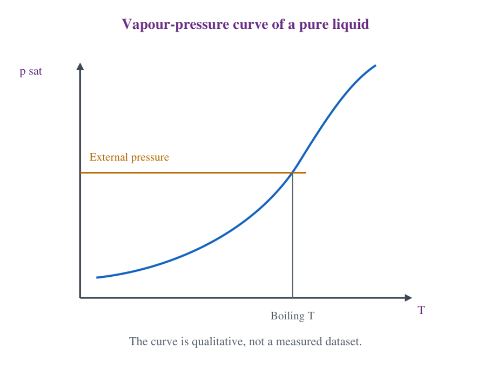
Qualitative pure-liquid curve: boiling occurs where saturation pressure meets the specified external pressure.
• Vapour pressure rises as temperature rises; it depends on the identity of the liquid.
• At the intersection with external pressure, bubbles can form throughout the liquid: this is the boiling temperature.
• Lower external pressure generally lowers the boiling temperature.
Example: pure water boils at about 100 °C when the external pressure is 1 standard atm; the curve shown is not measured data.
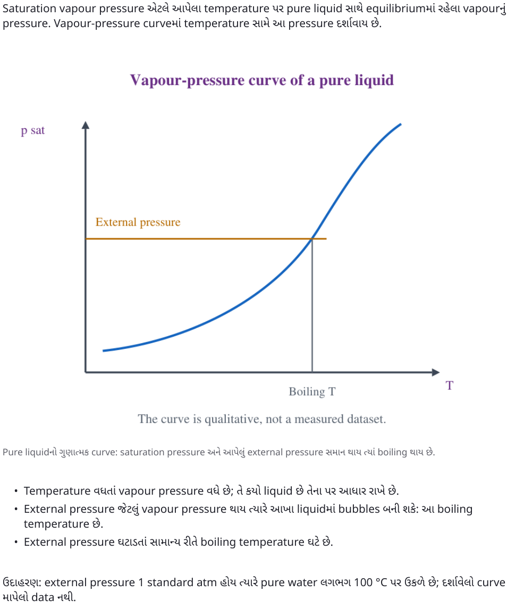
Q.4 (b) · Define: Crystallization, Solubility, Magma, Seeding · 4 marks
Four crystallization terms:
1. Crystallization: formation of an ordered solid crystal phase from a supersaturated solution or other parent phase.
2. Solubility: equilibrium concentration of dissolved solute in a specified solvent at a stated temperature and pressure.
3. Magma: a suspension of crystals in their mother liquor.
4. Seeding: addition of small crystals of the desired solid to provide growth surfaces in a supersaturated solution.
Example: a seeded salt solution forms a crystal–liquor magma; seeding helps control size when supersaturation is suitable.
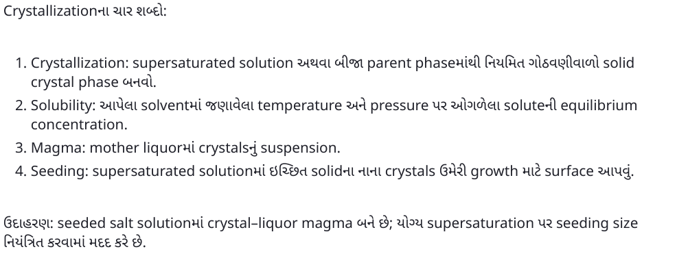
Q.4 (c) · Write principle of cooling tower. Also explain various cooling tower arrangement with sketches. · 7 marks
Cooling tower principle: warm water contacts air; a small part evaporates, taking latent heat from the remaining water. Sensible heat transfer also occurs. The cooled water is collected and reused.
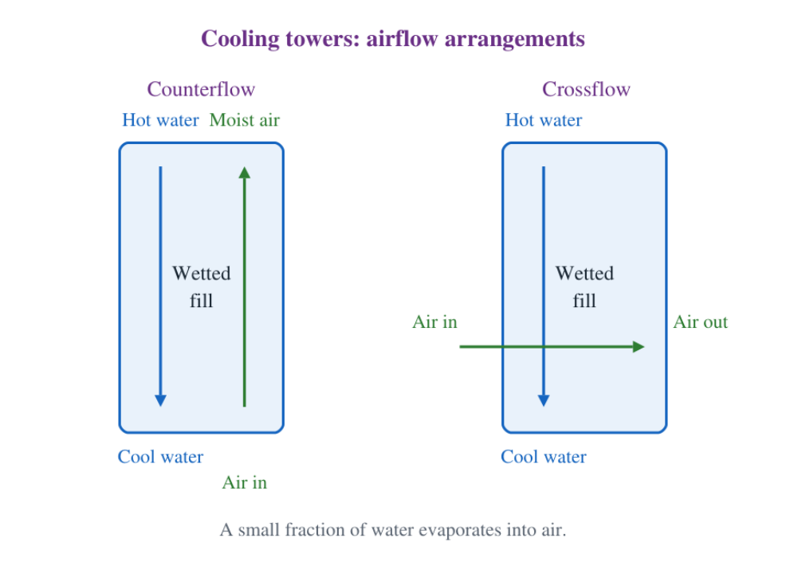
Airflow relative to falling water: counterflow and crossflow. Arrows are schematic.
Construction — part and purpose
1. A distribution system spreads hot water over fill, increasing the wetted contact area.
2. Air inlets and natural draft or a fan supply air; drift eliminators reduce liquid droplets carried out.
3. A cold-water basin and pump collect and return cooled water; make-up and blowdown control water inventory and dissolved solids.
Working — step and reason
1. Hot water flows down over the fill while air passes through it.
2. Some water evaporates into the air, removing latent heat; the air becomes warmer and more humid.
3. Cooled water collects in the basin. Add make-up to replace evaporation, drift and blowdown, and manage water quality.
Airflow arrangements
Arrangement How it contacts
Counterflow Air moves upward against downward water; fresh air meets cooled water near the bottom.
Crossflow Air passes horizontally across the falling water; distribution and fill layout differ.
Air can be moved by natural draft, a forced-draft fan at the inlet or an induced-draft fan at the outlet; draft type and airflow direction are separate classifications.
Example: cooling 40 °C return water to 30 °C gives a 10 °C range. The outlet generally remains above the entering-air wet-bulb temperature; actual approach depends on design and weather. Control scaling, biological growth, drift and make-up water quality.
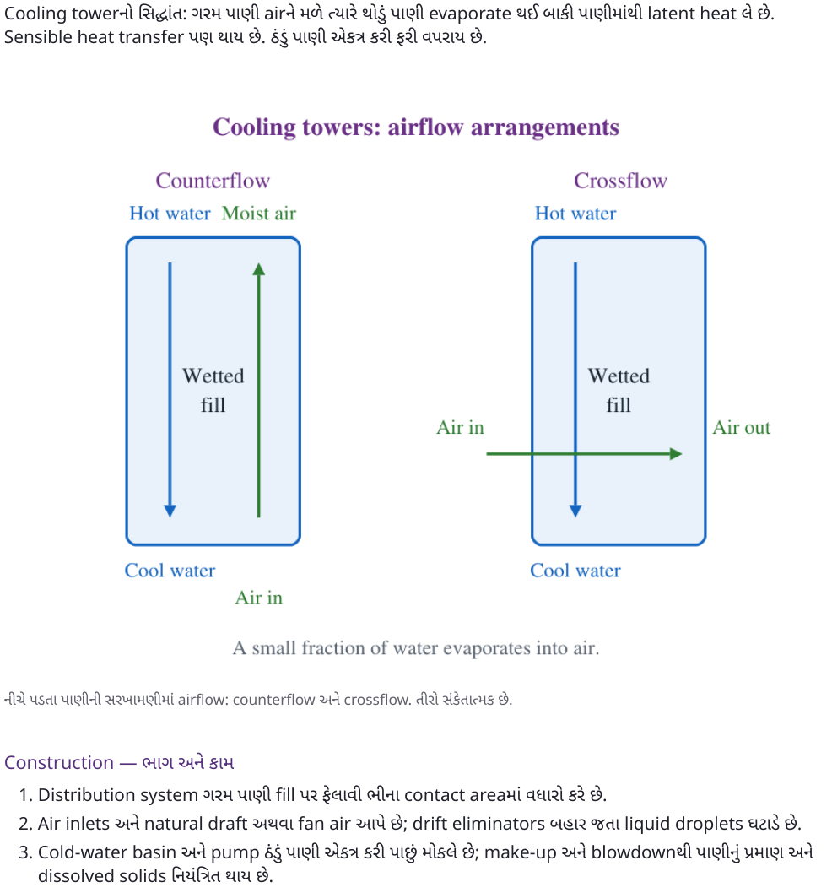
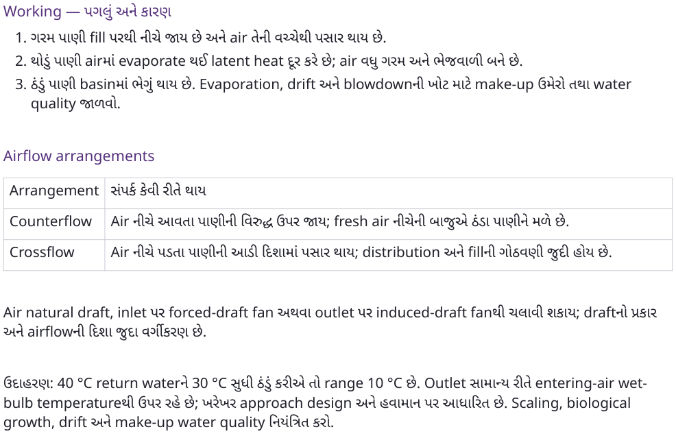
Q.4 (a) · Define: Humidification, Wet bulb temperature, Dew point · OR · 3 marks
Three humidification terms for a gas and its vapour:
1. Humidification: addition of vapour to a gas, usually by contacting the gas with the corresponding liquid.
2. Wet-bulb temperature: steady temperature reached by a properly wetted, ventilated thermometer through evaporation into the gas.
3. Dew point: temperature at which vapour first begins to condense when the gas is cooled at constant total pressure and vapour content.
Example: air passing over liquid water gains water vapour. For unsaturated air, evaporative cooling makes wet-bulb temperature lower than dry-bulb temperature.
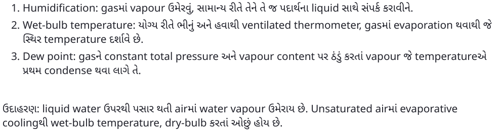
Q.4 (b) · Define super saturation. Also explain methods to get super saturation. · OR · 4 marks
Supersaturation exists when dissolved concentration C exceeds its equilibrium solubility C* at the stated conditions; it supplies the driving force for crystal growth.
• Cooling: lower temperature when solubility decreases on cooling.
• Evaporation: remove solvent to increase concentration.
• Change composition: add a compatible antisolvent or cause a suitable reaction that lowers solubility.
Example: a hot salt solution can become supersaturated on cooling. The useful rate and seeding depend on solubility and crystal kinetics; excess supersaturation can create many fines.
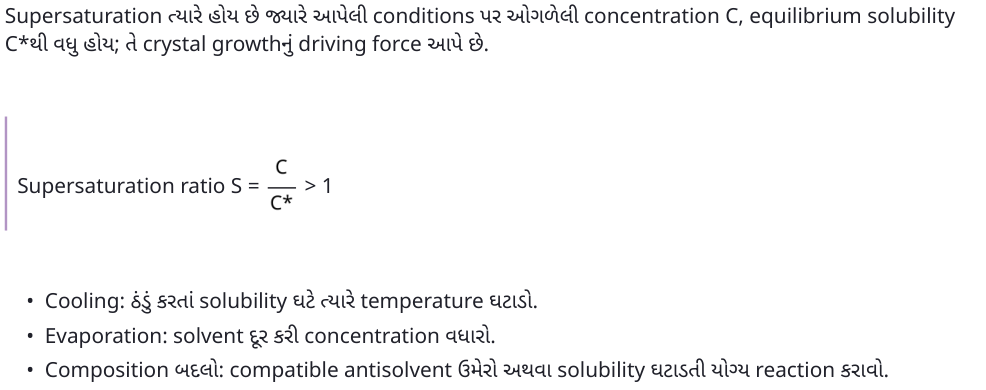
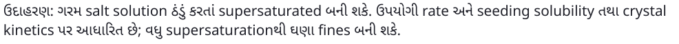
Q.4 (c) · An air(B)-water(A) sample has a dry bulb temperature 55 0C at 1 std atm pressure. Calculate Percentage humidity, Molal absolute humidity and humid heat. Data: absolute humidity and saturation humidity are 0.030 and 0.115 kg water/kg dry air respectively, Specific heat of air and water are 1005 and 1884 J/kg K respectively. · OR · 7 marks
Use the given humidity ratios on a dry-air mass basis. Percentage humidity is the ratio of actual to saturation humidity at the same temperature and pressure; it is not relative humidity.
Given and assumptions
Dry-bulb temperature = 55 °C; total pressure = 1 standard atm.
Y = 0.030 kg water vapour per kg dry air; Ys = 0.115 kg water vapour per kg dry air.
Cp,air = 1005 J kg⁻¹ K⁻¹; Cp,vapour = 1884 J kg⁻¹ K⁻¹.
Interpret the printed water heat capacity as that of water vapour; take molecular weights as 18 and 29 kg kmol⁻¹ for water and dry air.
Step-by-step solution
5. Humid heat formula — CH = Cp,air + Y Cp,vapour.
6. Substitute — CH = 1005 + 0.030 × 1884 = 1061.52 J per kg dry air per K.
Percentage humidity = 26.087%; molal absolute humidity = 0.04833 kmol water per kmol dry air; humid heat = 1061.52 J per kg dry air per K.
Check: actual humidity is less than saturation, so percentage humidity is below 100%. The vapour heat-capacity assumption is necessary because the paper says “water”.
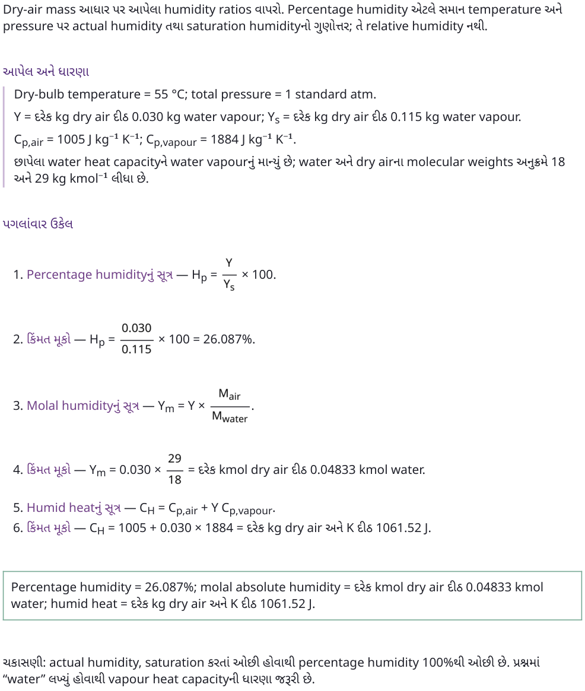
Question 5
Q5 · Reflux, azeotropes and distillation
Q.5 (a) · Define: Total Reflux Ratio and Optimum Reflux Ratio. · 3 marks
Reflux ratio R is the molar liquid reflux L returned to the column divided by distillate D withdrawn.
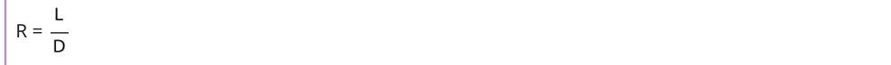
• Total reflux: all overhead condensate is returned and D = 0, so the limiting reflux ratio tends to infinity; this gives the minimum theoretical stages for the specified separation.
• Optimum reflux ratio: the operating ratio chosen by balancing total annual capital and operating costs for the duty; it lies above the minimum feasible reflux.
Example: more reflux often reduces the number of trays but increases vapour and condenser duties. The economic optimum is not a universal fixed number.
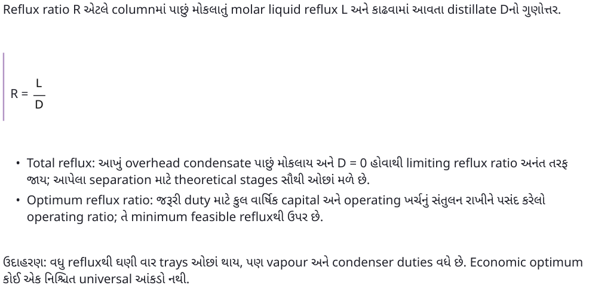
Q.5 (b) · Differentiate: Minimum boiling azeotrope and Maximum boiling azeotrope · 4 marks
An azeotrope boils at a fixed composition where equilibrium vapour and liquid compositions are equal, at a specified pressure.
![Q.5 (b): preserved source formula, table or diagram, page 38. Extracted text context (formula notation may be incomplete): Point Minimum-boiling Maximum-boiling Boiling point Below the boiling points of the pure components at the same pressure. Above the boiling points of the pure components at the same pressure. Deviation Typically sufficiently positive deviation from Raoult’s law. Typically sufficiently negative deviation from Raoult’s law. Example Ethanol–water near 1 atm. Hydrogen chloride–water near 1 atm.](summer-2026.assets/0071.webp)
At the azeotropic composition α = 1. Ordinary distillation at that pressure approaches but cannot pass the azeotrope; its composition can change with pressure.
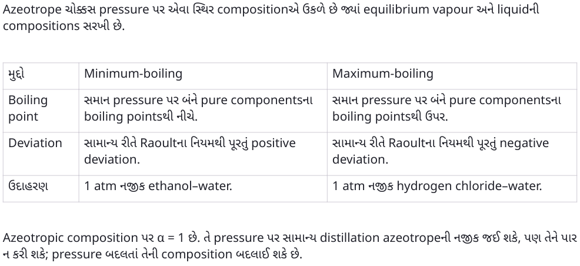
Q.5 (c) · Explaining stepwise procedure for obtaining theoretical plates by McCabe-Thiele method. · 7 marks
McCabe–Thiele is a graphical method for the theoretical equilibrium stages of a binary distillation. Use VLE data at the column pressure and assume approximately constant molar overflow in each section.
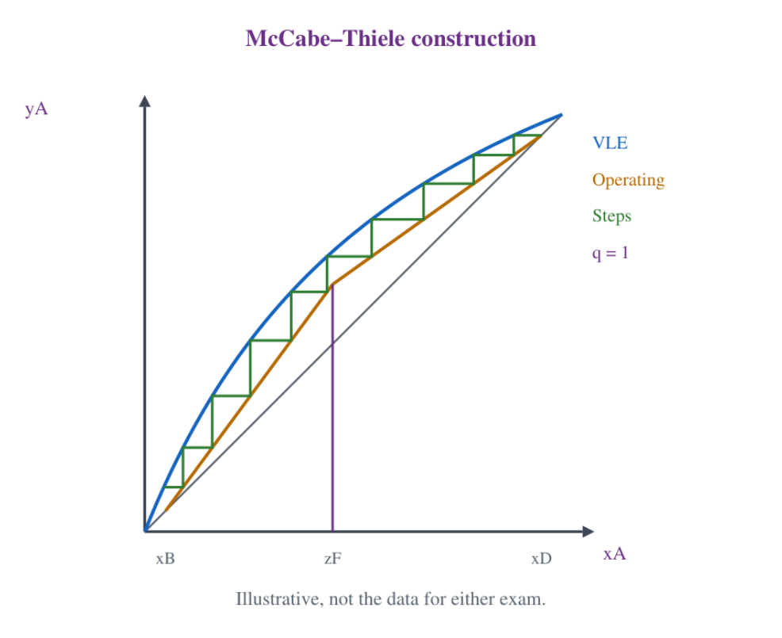
Illustrative graph: the curve and steps use an assumed binary system, not either exam’s data.
Stepwise construction and stage count
1. Plot equilibrium y* against liquid mole fraction x for the more volatile component and draw the diagonal y = x.
2. Mark bottoms xB, feed zF and distillate xD on the diagonal. Choose a feasible reflux R above its minimum.
5. Find the intersection of the rectifying line and q-line. Join it to (xB, xB) for the stripping line.
6. Start at (xD, xD), step horizontally to the equilibrium curve and vertically to the operating line; repeat. Switch to the stripping line at the feed intersection and continue to xB.
7. Count equilibrium steps. The feed stage is at the change of operating lines. A partial reboiler normally counts as one stage; a total condenser does not.
Illustrative tray conversion
If a separate construction gives 8 theoretical stages including one partial reboiler, there are 7
Limitations: non-constant molar overflow, a nonbinary mixture or an azeotrope may require a more detailed model; use appropriate stage efficiencies for real trays.
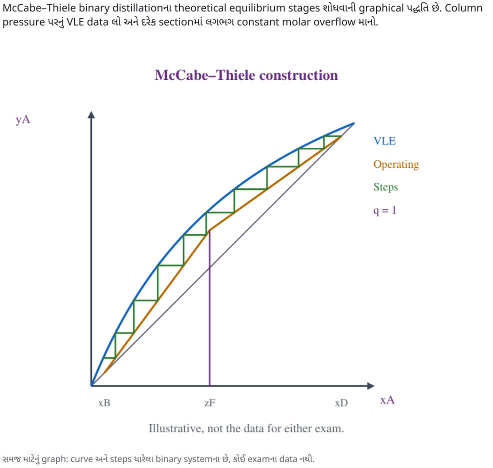
Q.5 (a) · Expain q-line for different type of feed conditions · OR · 3 marks
The q-line represents the feed thermal condition and passes through (zF, zF) on the distillation x–y diagram.
Example: a saturated liquid feed has q = 1. q is an enthalpy-based feed condition and may lie outside 0 to 1; the displayed formula is not used by direct substitution at q = 1.
Q.5 (b) · Derive Rayleigh equation for simple distillation. · OR · 4 marks
Rayleigh’s equation describes a well-mixed differential batch distillation with no reflux; the infinitesimal vapour leaving is in equilibrium with the remaining liquid.
Symbols and assumptions
F, xF = initial liquid moles and more-volatile mole fraction.
W, x = instantaneous liquid moles and composition; y* = equilibrium vapour composition at x.
No reflux or vapour holdup; pressure is specified and equilibrium data apply.
Derivation, step by step
1. Total balance — dD = −dW, where dD is the positive distillate withdrawn.
2. Component balance — −d(Wx) = y* dD; hence d(Wx) = y* dW.
3. Expand — W dx + x dW = y* dW.
5. Integrate — From F, xF to W, xW, reverse the composition limits.

Check: W is less than F and the pot is leaner in the more volatile component. At y* = x the integral becomes singular; the stated equilibrium and operating assumptions matter.
Q.5 (c) · 100 kmol/h of a feed containing 36 mole% methanol is to be continuously distilled in a fractionating column to get 96.5 mole% methanol as a distillate and 10 mole% methanol as a bottom product. Find the molal flow rates of the distillate and the bottom. · OR · 7 marks
Use a total and methanol mole balance on the steady fractionating column; no equilibrium data are needed for product flow rates.
Given
F = 100 kmol h⁻¹; zF = 0.36 methanol.
xD = 0.965; xB = 0.10 methanol.
D and B are distillate and bottoms rates; assume no other outlet or accumulation.
Step-by-step solution
1. Total balance — F = D + B, so B = 100 − D kmol h⁻¹.
2. Methanol balance — FzF = DxD + BxB.
3. Substitute — 100(0.36) = 0.965D + 0.10(100 − D).
4. Rearrange — 36 − 10 = (0.965 − 0.10)D = 0.865D.
6. Bottoms — B = 100 − 30.058 = 69.942 kmol h⁻¹.
D ≈ 30.058 kmol h⁻¹; B ≈ 69.942 kmol h⁻¹.
Check: D + B = 100 and methanol is approximately 29.006 + 6.994 = 36.000 kmol h⁻¹. These are molal flow rates, not mass flow rates.